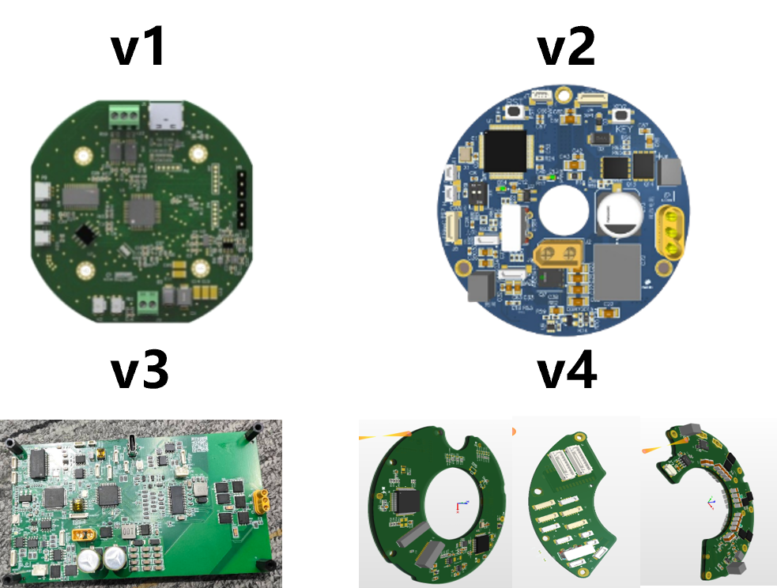
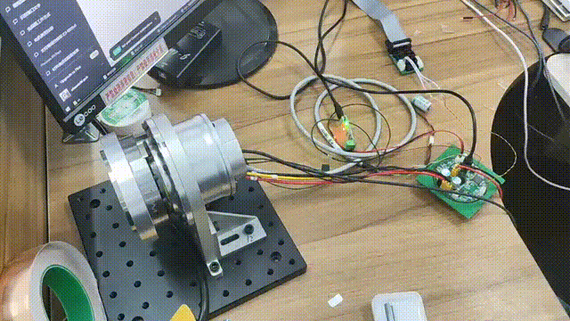
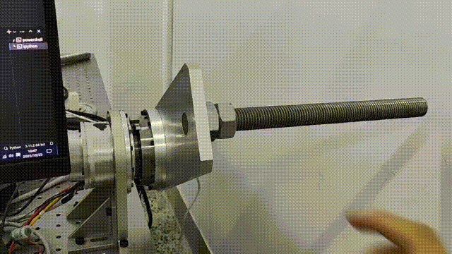
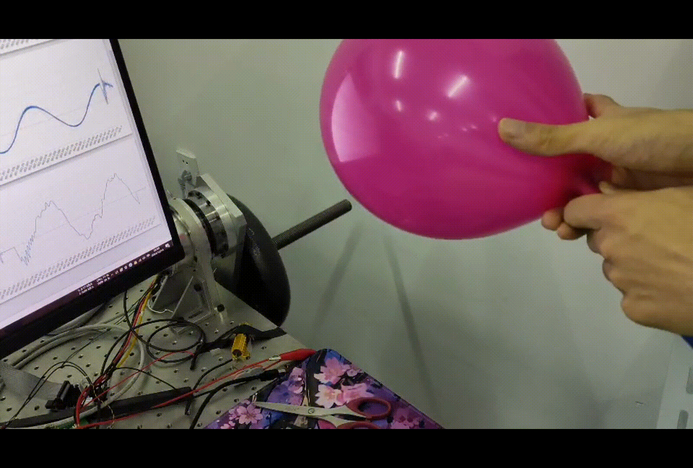

High-bandwidth Complicant Servo Driver
- Collaborator: Chuanzhi Gao, You Wan, Yunxiang Jiang
We designed a high-bandwidth compliant servo driver with four iterative versions. From the initial circular prototype (v1) to the modular, split-type design (v4), each iteration optimizes circuit layout, enhances signal integration, and improves mechanical adaptability, laying a solid foundation for high-performance servo control.

The position control test of the servo driver. Equipped with a high-bandwidth control algorithm, the system achieves precise and fast position tracking, which is critical for applications requiring high dynamic response and positioning accuracy.

This demo demonstrates the compliant control capability of our servo driver. When external force (e.g., manual interaction) is applied, the driver adjusts output torque in real time to achieve smooth, human-like compliant response, making it ideal for human-robot collaboration scenarios.

The collision detection test uses a balloon to simulate a fragile obstacle. Our servo driver can detect collision events within milliseconds and trigger a rapid safety response, effectively preventing damage to the robot and its surroundings during interaction.
